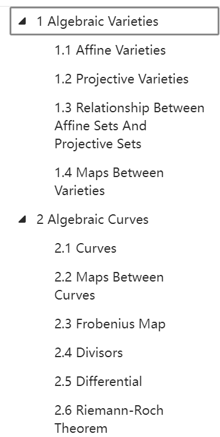

最近想学习一下椭圆曲线密码学中涉及的数学知识，主要是一些初步的代数几何知识（代数曲线、仿射代数簇等）。
出于对数学的兴趣，我并不想将数学知识完全作为黑箱来学习密码学。并且我感觉有些东西不懂点代数几何是没法理解的，比如Weil Decent Attack (GHS Attack)，超椭圆曲线，超奇异椭圆曲线同源问题等等。此外，多变量公钥、基于编码学的密码也与代数几何分不开，这正是个打基础的好机会。
另一个目的是想尝试快速学习。看到很多厉害的朋友几天甚至一天看完一本书，我也想试试。这次希望能在略去很多技术细节的同时，理解框架和最重要的内容。
目标
给自己十天的时间，一天学几个小时。不求甚解但要建立基本的理解。
最高目标：大致理解这些内容

最低目标：至少搞懂divisor, torsion, 超椭圆曲线是啥，还有Riemann-Roch定理。为看懂Elliptic Curves扫清数学上的障碍。
我的个人条件
具备的数学基础
- 高数线代，自己多学了一点基本的东西，但少于一般学校的数分高代
- 初等数论、一点格论（几何数论）、群环域、一丁点范畴论（函子都没搞懂）
- 看过一个微分流形科普视频：什么是微分流形
- 看过一个概型的科普视频：⑨代数：概形的灵感
- 四年前学过一点复变，基本忘了
而且那点微分流形、复变大多也都忘了，脑海中只剩一点框架。
整理的资料
- B站收藏夹：各种相关的数学视频。有展开讲的长课也有科普概念的较短视频。
- 知乎学习路线：学习代数几何需要怎样的基础？
我的行进路线
知乎学习路线说，学习代数曲线有三种方向，前置知识分别不同。
- 代数几何方向：抽代和一点交换代数
- 分析方向：复变函数、黎曼面
- 数论方向：抽代和一点交换代数、会代数数论更好
然而，我每个方向所需的基础都差一些。
第0天(3.29, 0.5h)
先补点常识：数学物理方法 （全合集） 看了P2，P4，P5，就是想了解下无穷远点和黎曼面是啥意思。学了半小时，不算。
第1天(3.30, 2h)
重温⑨代数：概形的灵感：花了2h跟着思路推，这次基本都看懂了。大概知道了层、仿射概形是什么，顺带知道了函子是啥。主要用到抽代，但流形和范畴论基础也发挥了作用…
感觉是考研PTSD了，学的时候莫名其妙地焦虑和紧张，很累。本来想学4h结果只学了2h
第2天(3.31, 4h)
【双语】代数几何：P1前40分钟看了1h。
感觉需要懂微分流形和复变，而且这个偏几何，先放。
找资源：1.5h左右（效率很低…）。
决定先看Miles Reid的Undergraduate Algebraic Geometry第一章，同时youtube上有他的课。书里没讲除子，但用圆锥曲线开的头。我正好之前做过一个用圆锥曲线点群加密的密码题，感点兴趣。
看Basic Algebraic Geometry的P1：1.5h
第3天(4.1, 3h)
- 看Undergraduate Algebraic Geometry的Woffle：0.5h
- 看Undergraduate Algebraic Geometry到前15页：1.5h，后面有一段看不懂
- 转看Conic and Cubics，看完1.1：1h
中间因为各种事没学，n天后…
第4天(4.11, 2.5h)
- 看Conic and Cubics的1.2：1.5h
涉及射影几何的内容感觉不是很懂。可能这也是因为我几何会的太少，中学起我就怕几何
之前那个书展开的思路明显不如这俩视频好懂。几句话就说懂了齐次坐标，以及仿射平面和欧氏平面上的点和线之间的关系。
- Conic and Cubics的1.3看个大概：40min
接下来打算啃Fulton了，u1s1感觉自己基础差不多是够啃它的。